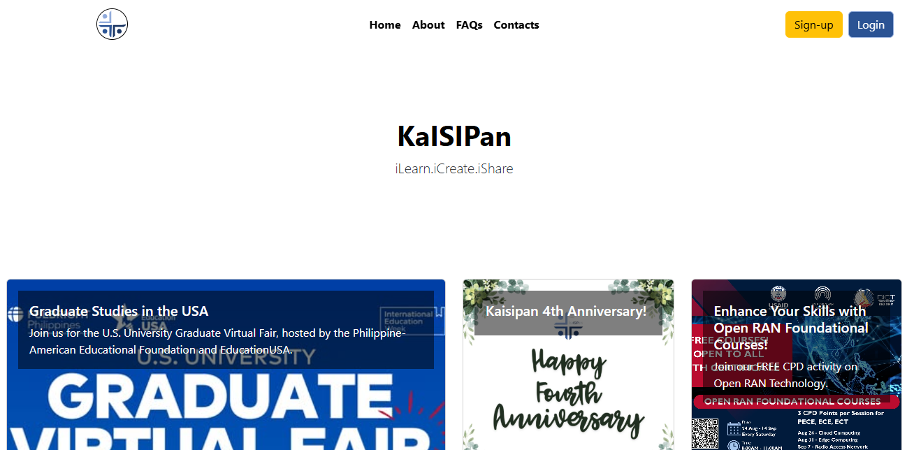
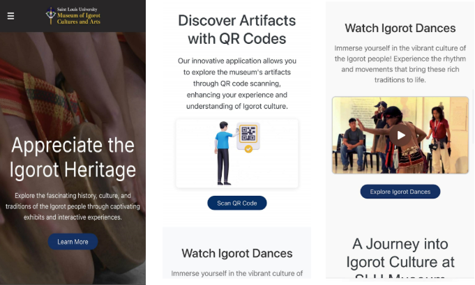
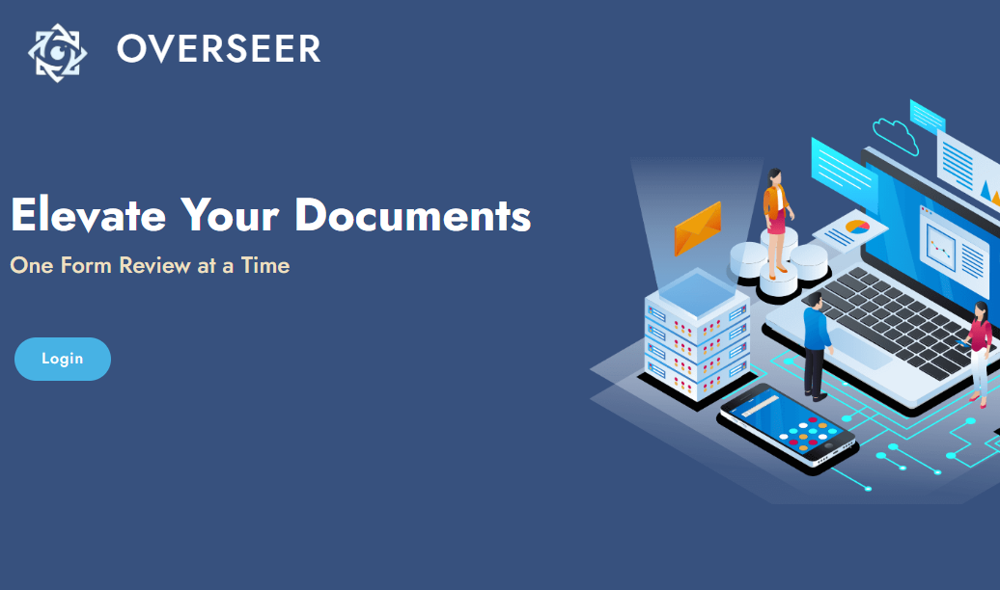
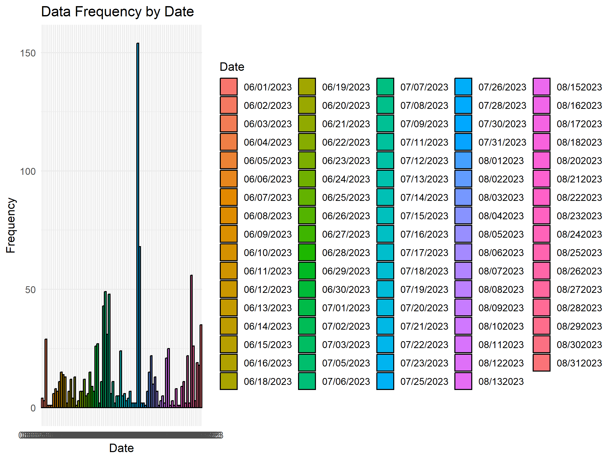
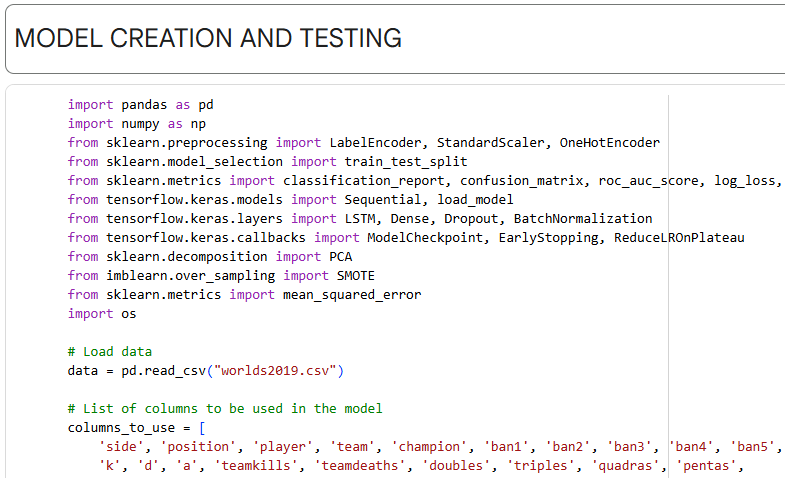

PROJECTS
On-the-Job Training

Capstone Project

Academic Projects




Kaisipan, Inc. — Developer
Technologies: HTML, CSS, JavaScript (React), Node.js, MySQL, Zoom API
Developer
Technologies: WordPress (CMS), HTML, CSS, JavaScript, PHP (WordPress customization), Elementor
Lead Developer
In collaboration with the SLU Museum of Igorot Culture and Arts.
Project Lead
Technologies: CORBA IDL, Java (Server & Java GUI Client), Python (Non-Java Client), MySQL, Swing (Java GUI), Tkinter (Python GUI - optional), words.txt
words.txt), round timing, and
persistence to MySQL (player wins, top words).
Project Lead
Technologies: PHP (User Module), Node.js & Express.js (Admin Module), MySQL, Bootstrap, PDF.js
Project Lead
Technologies: R, Python (scikit-learn), Random Forest Regression, ggplot2, Excel
Research Lead
Technologies: Python, TensorFlow/Keras, LSTM, Scikit-learn, Pandas